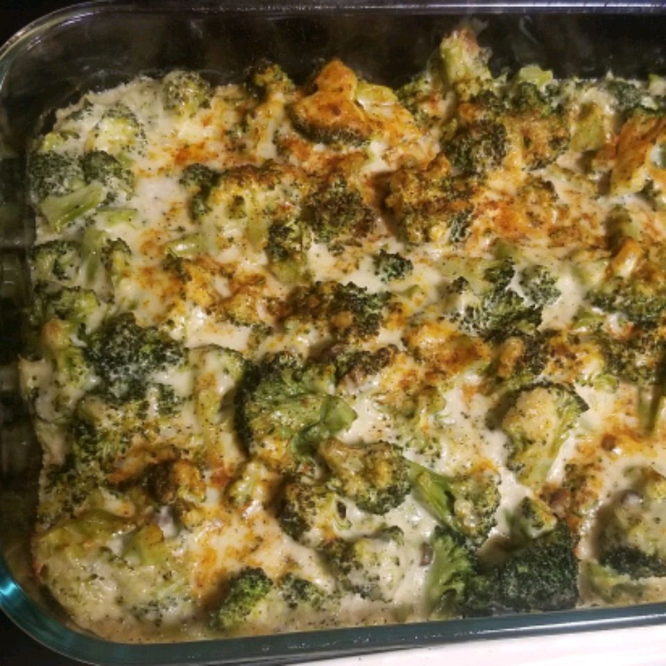

My mom made this broccoli cheese casserole every Thanksgiving when I was little. We kids could never get enough! If you have children or have some coming to visit you as guests this Thanksgiving, I guarantee that they will eat (and enjoy) this veggie dish. It's also fabulous with a Christmas ham.